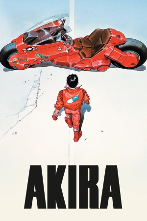
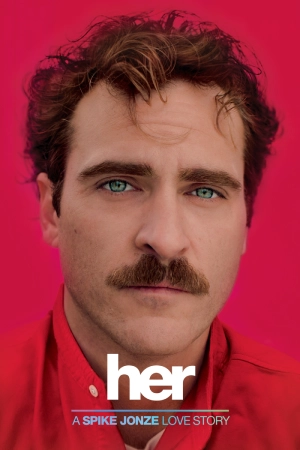
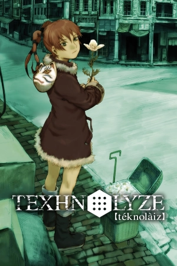
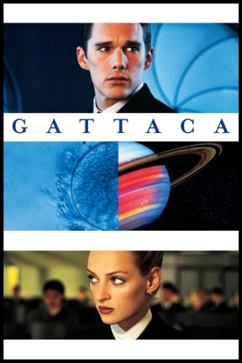

All my tears
Turned to dust
Drowned is the heart once loved
In the mornings i lie
Beneath my tree of hope
In the nights i regret my thoughts
We're struggling to feel
Cannot find inner peace
In the shadows i face
My own enemy
All my tears
Turned to dust
Drowned is the heart once loved
In the mornings i walk
Searching for the sun
In the nights i feel so lost
Embrace the unknown
Water flows
Fill the empty sky












Liquid Moon Drops es nuestro primer sencillo oficial lanzado durante el 2025. Aborda conceptos como la soledad, nostalgia y conflictos que surgen de las conexiones humanas, todo en un contexto distópico. En cuanto a la sonoridad, toma como referencia sonidos que van desde la música cinematográfica hasta la música electrónica, recorriendo además géneros como el shoegaze, trip hop y ambient, generando una atmósfera atrapante, profunda y melancólica.